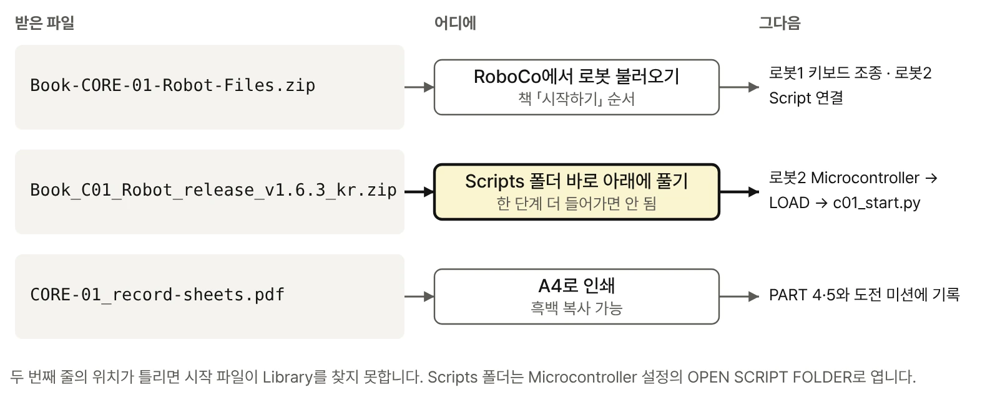
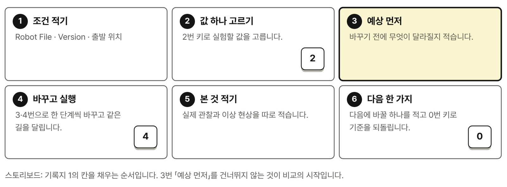

로봇1 · 키보드로 직접 조종
Book-CORE-01-CONTROLS · CH01 · CH20
Script 없이 Controls Mapping으로 조종합니다.
피지컬 AI로 배우는 RoboCo 로봇 구조와 Python 제어 · Digital Package
Digital Package · Book_C01_Robot v1.6.3 · RoboCo API 0.3.1
로봇 파일 2종, 시작 파일과 Educational Library, 실험·미션 기록지를 한곳에 모았습니다. 책은 이 파일들로 CHAPTER 01부터 25까지 진행합니다. 파일을 놓는 위치와 연결 순서는 책의 「시작하기」를 따릅니다.

같은 4륜 독립 구동·독립 조향 로봇을 두 가지 방식으로 다룹니다. 두 파일을 한 번에 받으려면 ZIP을, 하나씩 받으려면 아래 파일 이름을 누릅니다.
Book-CORE-01-CONTROLS · CH01 · CH20
Script 없이 Controls Mapping으로 조종합니다.

Book-CORE-01-SCRIPT_PART · CH02 – CH25
Microcontroller에 시작 파일 c01_start.py를 연결해 주행·실험·미션을 실행합니다.
Book-CORE-01-SCRIPT로 부릅니다. 제공 파일 이름은 Book-CORE-01-SCRIPT_PART이며 같은 로봇2입니다. 파일 이름이 바뀌면 이 페이지와 정오표에 함께 알립니다.로봇2에 연결하는 파일은 시작 파일 c01_start.py 하나입니다. C01_Lib 폴더는 시작 파일이 불러 쓰는 저자 Educational Library로, RoboCo 공식 API가 아닙니다. 공식 API와 Library의 경계는 책 부록 E에서 찾아볼 수 있습니다.
Book_C01_Robot_release_v1.6.3_kr.zip · 50 KB
책과 함께 쓰는 확정 배포본(1.6.3)입니다. 코드의 주석과 README가 한국어입니다.
Scripts/ ← RoboCo Microcontroller 설정의 OPEN SCRIPT FOLDER
Book_C01_Robot/
c01_start.py 6 KB — 시작 파일README.md 39 KB__init__.pyC01_Lib/ — Educational Library
__init__.py__init__.py 260 Bc01lib_app.py 13 KBc01lib_drive.py 6 KBc01lib_experiment.py 12 KBc01lib_keys.py 3 KBc01lib_led.py 2 KBc01lib_log.py 3 KBc01lib_mission.py 10 KBc01lib_ports.py 6 KBc01lib_robot.py 22 KBc01lib_screen.py 3 KBc01lib_steering.py 8 KBBook_C01_Robot 폴더를 Scripts 폴더 바로 아래에 둡니다. 한 단계 더 들어가면 시작 파일이 Library를 찾지 못합니다.기록지 1·2는 책 부록 I의 빈 양식을 그대로 인쇄할 수 있게 만든 것이고, 기록지 3은 웹 자료 페이지의 도전 미션용으로 새로 만든 웹 전용 양식입니다. 흑백으로 복사해도 칸이 구분되도록 회색 선을 썼습니다.

| 로봇 파일 2종 | Book-CORE-01-CONTROLS · Book-CORE-01-SCRIPT_PART2026-09-30 · 151 KB SHA-256 cc3978810bfd9d289208c6b84b155c59fa6ae4b9b9e1aa30c3e19f2fa98d1397 |
|---|---|
| 시작 파일·Library (한국어 주석) | Book_C01_Robot release v1.6.32026-10-09 · 50 KB SHA-256 8ccad6d51b2a89d150235f9f89efd8356fffc953bd9af7baca8a86403fdcb1ca |
| 기록지 | CORE-01 record sheets (ko) 2026-10-08 · 390 KB SHA-256 f2abb59088dc0b2b99d4e31f879acc813308a14b9aa715e3dbe38ec6b33ecefa |
| RoboCo API | 0.3.1 |
| 전체 목록 | manifest.json · SHA256SUMS.txt |
책과 화면·LOG·키 동작이 다르면 먼저 Version을 확인합니다. RoboCo 업데이트로 호환 문제가 생기면 갱신 파일과 안내를 Version·정오표에 게시합니다.
RoboCo는 Filament Games가 만든 게임입니다. 이 파일들은 RoboCo 공식 예제나 공식 교재가 아니며, 이 책의 실습을 위해 저자가 만들었습니다. 사용과 재배포 조건은 이 책의 저작권 안내(판권면)를 따릅니다.